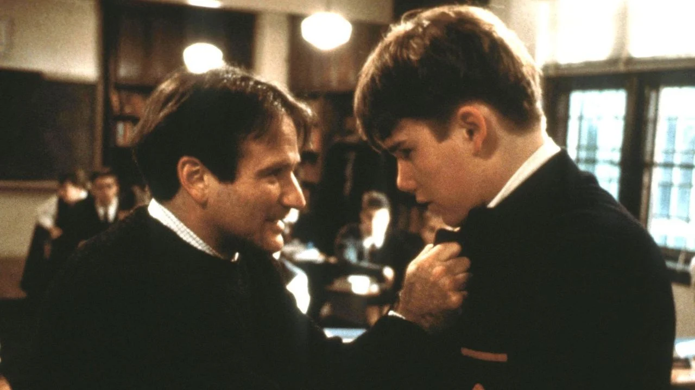
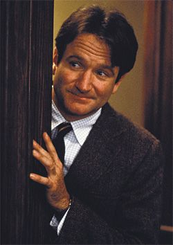
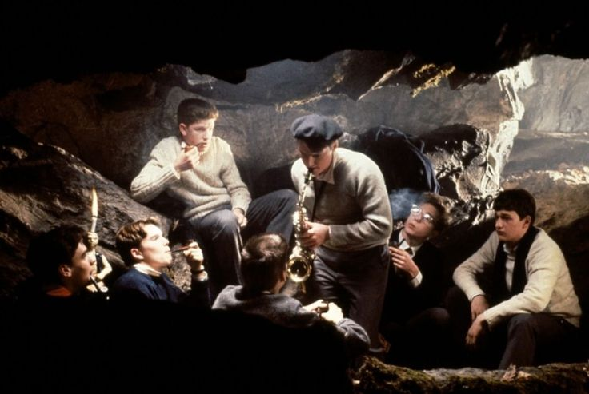
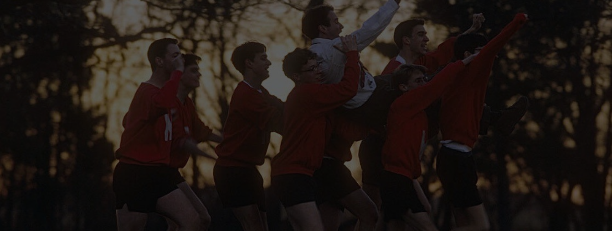

O que aprendemos com o Professor Keating?
Em meio a lições de poesia, ele nos ensinou sobre liberdade, coragem e a importância de sermos nós mesmos.
18 de Out de 2026◷ 6 min de leitura

Em meio a lições de poesia, ele nos ensinou sobre liberdade, coragem e a importância de sermos nós mesmos.




Robin Williams

Ethan Hawke

Robert Sean Leonard

Josh Charles

Gale Hansen
“CARPE DIEM, APROVEITE O DIA”
-John Keating-